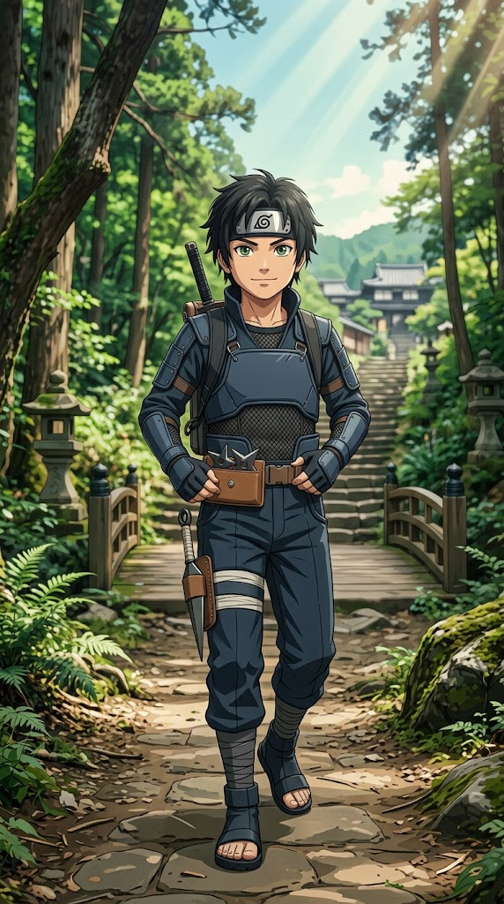

Stärken
- Aktiv und engagiert
- Lerne schnell und kann mich gut in neue Themen einarbeiten
- Helfe anderen Menschen gerne
- Kann gut mit Menschen kommunizieren
- Kreativ und bringe gerne eigene Ideen ein
WHITELIST-BEWERBUNG · ZENKAI DE
Herzlich willkommen zu meiner Bewerbung für die Whitelist von Zenkai DE. In dieser Bewerbung werde ich mich zunächst vorstellen und anschließend meinen Charakter präsentieren, den ich auf dem Server verkörpern werde. Viel Spaß beim Lesen!
ABSCHNITT I
Ein kurzer Einblick in meine Person außerhalb des Roleplays.
ABSCHNITT II
Meine üblichen Zeiten können sich bei wichtigen Terminen vereinzelt ändern.
17:40 Uhr bis 22:30 Uhr
19:30 Uhr bis 23:00 Uhr
In der Regel von 10:00 Uhr bis 22:00 Uhr
ABSCHNITT III
Ihr solltet mich whitelisten, weil ich motiviert bin, langfristig und ernsthaft RP auf Zenkai DE zu spielen. Ich gehe respektvoll mit anderen Spielern um, halte mich an Regeln und möchte einen glaubwürdigen Charakter mit eigener Geschichte entwickeln.
Mir ist es wichtig, nicht nur für mich selbst RP zu machen, sondern auch Situationen zu schaffen, an denen andere Spieler Spaß haben. Außerdem bin ich offen für Kritik und bereit, mich weiterzuentwickeln.
ABSCHNITT IV
Ich habe mit RP im GMod-Bereich angefangen und dabei unter anderem JvS- und Manga-RP gespielt. Über die Jahre konnte ich dabei verschiedene Rollen und Positionen kennenlernen.
Im JvS-Bereich war ich unter anderem Ratsmitglied der Krieger sowie Darth der Hexer auf dem Server NK. Darüber hinaus habe ich auf verschiedenen Servern wie WOS, TFG, NexusV1, HRP und weiteren Servern gespielt, an deren Namen ich mich mittlerweile nicht mehr vollständig erinnere.
Im Bereich Manga-RP habe ich hauptsächlich auf Yugen gespielt. Dort war ich bis zum Serverende als Elite-Jonin aktiv. Zu guter Letzt habe ich auch Gothic-RP betrieben. Dabei handelt es sich um ein älteres Spiel im Mittelalter-Setting, in dem hauptsächlich Schreib-RP betrieben wurde. Dort war ich als Bandit 1. Klasse tätig.
Insgesamt habe ich rund 3.500 Stunden in GMod und etwa 500 Stunden in Gothic gesammelt. Durch diese intensive RP-Erfahrung konnte ich ein gutes Verständnis für verschiedene RP-Stile, Situationen und Rollen entwickeln. Daher würde ich meine RP-Erfahrung als sehr umfangreich einschätzen und denke, dass ich mich gut in das RP auf eurem Server einfinden und mit dem vorhandenen RP-Niveau mithalten kann.
ABSCHNITT V
Die Charakterakte meines Akademieschülers Akito.

CHARAKTERAKTE
Akito ist ein junger und motivierter Akademieschüler, der sich durch Disziplin, Loyalität und seinen großen Traum auszeichnet. Trotz seines jungen Alters möchte er sich Schritt für Schritt weiterentwickeln und eines Tages ein Shinobi werden, auf den sein Dorf vertrauen kann.
ABSCHNITT VI
Akito ist ein achtjähriger Akademieschüler aus [Dorf eintragen]. Er lebt gemeinsam mit seinen Eltern Gyomei und Kira in einem einfachen, aber liebevollen Zuhause. Sein Vater Gyomei hat ihm früh beigebracht, dass ein Shinobi nicht nur an seiner Stärke gemessen wird, sondern vor allem daran, ob er zu seinem Wort steht und seine Kameraden beschützt. Seine Mutter Kira sorgt dafür, dass Akito trotz seines großen Traums weiterhin Kind sein darf und nicht vergisst, auch Spaß zu haben.
Schon seit seiner frühen Kindheit interessiert sich Akito für Shinobi und deren Geschichten. Besonders die Erzählungen über legendäre Ninja, die ihr Dorf beschützten und trotz schwieriger Situationen niemals aufgegeben haben, begeistern ihn. Sein größter Traum ist es deshalb, eines Tages selbst ein legendärer Sannin zu werden.
In der Akademie gilt Akito als diszipliniert und aufmerksam. Wenn er sich ein Ziel setzt, übt er so lange, bis er zumindest eine Verbesserung bemerkt. Dabei kann er jedoch auch sehr direkt und stur sein. Nach Kritik denkt er aber meist lange über seine Fehler nach und versucht, es beim nächsten Mal besser zu machen.
Sein bevorzugter Kampfstil ist Taijutsu. Akito trainiert vor allem seine Beweglichkeit, seine Reaktion und den Umgang mit einfachen Nahkampftechniken. Seine Chakra-Natur ist bisher unbekannt, weshalb er sich aktuell auf die Grundlagen konzentriert.
Akito ist noch kein außergewöhnlich starker Shinobi. Er ist jung, macht Fehler und überschätzt sich manchmal. Doch er besitzt eine große Motivation, einen starken Willen und den Wunsch, sich stetig weiterzuentwickeln. Sein Ziel ist nicht nur, eines Tages ein legendärer Sannin zu werden, sondern auch ein Shinobi, auf den seine Familie, seine Freunde und sein Dorf vertrauen können.
SCHLUSSWORT
Ich hoffe, meine Bewerbung konnte euch überzeugen und dass ich die Chance bekomme, auf eurem Server zu spielen. Ich würde mich freuen, Teil von Zenkai DE zu werden und gemeinsam mit der Community spannendes Roleplay zu erleben.
Mit freundlichen Grüßen
Julian